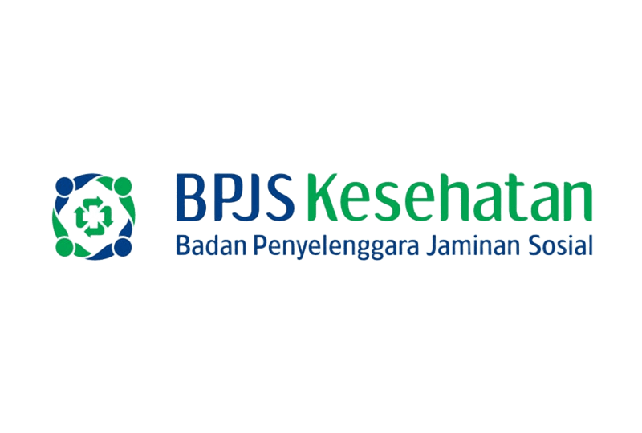
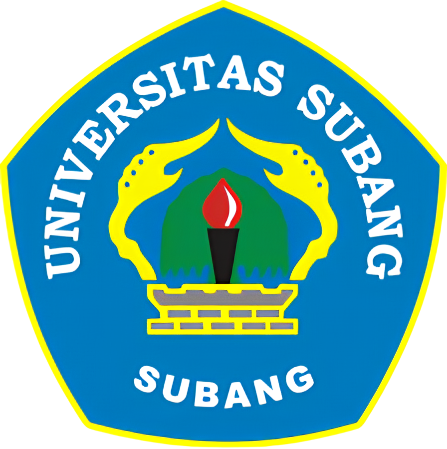

Otomatisasi Perkantoran dan Layanan Bisnis
Deskripsi
Otomatisasi Perkantoran dan Layanan Bisnis merupakan program keahlian pada bidang bisnis dan manajemen dengan konsentrasi keahlian manajemen perkantoran, memberikan kontribusi dalam menjadikan peserta didik memiliki kompetensi keahlian sebagai: staf administrasi; resepsionis; asisten arsiparis; asisten sekretaris; layanan pelanggan; dan sebagai tenaga operator junior dibidang komputer dan otomatisasi perkantoran serta wirausahawan yang tangguh dengan sikap bermatabat, berkualitas, dan terpercaya.
Kompetensi Dasar
- Teknologi Perkantoran
- Korespondensi
- Kearsipan
- Otomatisasi Tata Kelola Kepegawaian
- Otomatisasi Tata Kelola Keuangan
- Otomatisasi Tata Kelola Sarana dan Prasarana
- Otomatisasi Tata Kelola Humas dan Keprotokolan
- Mengembangkan Produk Kreatif dan Kewirausahaan
Tujuan Pembelajaran
Tujuan Kosentrasi Keahlian Manajemen Perkantoran secara umum mengacu pada isi Undang Undang
Sistem Pendidikan Nasional (UU SPN) pasal 3 mengenai Tujuan Pendidikan Nasional dan
penjelasan pasal 15 yang menyebutkan bahwa pendidikan kejuruan merupakan pendidikan menengah
yang mempersiapkan peserta didik terutama untuk bekerja dalam bidang tertentu.
Kompetensi Keahlian Otomatisasi Dan Tata Kelola Perkantoran dan Konsentrasi keahlian Manajemen
Perkantoran sebagai bagian dari pendidikan menengah, bertujuan menyiapkan siswa/tamatan yang:
- Saat memasuki lapangan kerja dapat mengembangkan sikap profesional dalam lingkup Program Keahlian
Manajemen perkantoran, khususnya KK Otomatisasi Dan Tata Kelola Perkantoran. - Mempu memilih karier, mampu berkompetisi dan mampu mengembangkan diri dalam lingkup Program keahlian
Bisnis dan Manajemen, khususnya KK Otomatisasi Dan Tata Kelola Perkantoran - Menjadi tenaga kerja tingat menengah untuk mengisi kebutuhan dunia usaha dan industri pada saat ini
maupun masa yang akan datang dalam lingkup Program keahlian Manajemen Perkantoran,
khususnya KK Otomatisasi Dan Tata Kelola Perkantoran - Menjadi warga Negara yang produktif, adaptif, selektif, dan kreatif.
Tenaga Pengajar Produktif
- Hj. Herlinawati, S.Pd
- Dra. Nining Hernindah
- Dra. Hj. Yayah Bahriah
- Nana Anggraeni, S.Pd
- Dini Wulandari, S.Pd
- Aziz Muhammad, S.Pd. M.M, M.Ba
- Hibar Rahayu, S.Pd
- Regina Srinita CP, S.Pd
Institusi Pasangan
|  |  |
 |
 |